A painting robot

Yash Bhandari and I took an off-the-shelf 6-DOF arm and had it paint Scalable Vector Graphics (SVG) images onto a slanted canvas with a brush.
I set up the arm and its controller, built the stand, measured the arm and wrote the forward kinematics. Yash wrote the inverse kinematics and everything on the SVG side, from parsing the file to mapping it onto the canvas. The code is in Yash’s course repo, C312-Labs.
The arm
There aren’t many inexpensive robot arms you can buy outside of China, so we took the risk and ordered one from AliExpress. We liked the design of the 7bot, which drives its elbow through a parallel linkage from a servo down at the shoulder and so takes a lot of weight out of the upper arm. Pindar Van Arman has also used a 7bot in his Cloudpainter project. What we ended up with was a Thanksbuyer ARM-21N3, a 7bot clone. Its joints turn on bearings and the main parts are laser-cut aluminum, so it’s light and stiff.

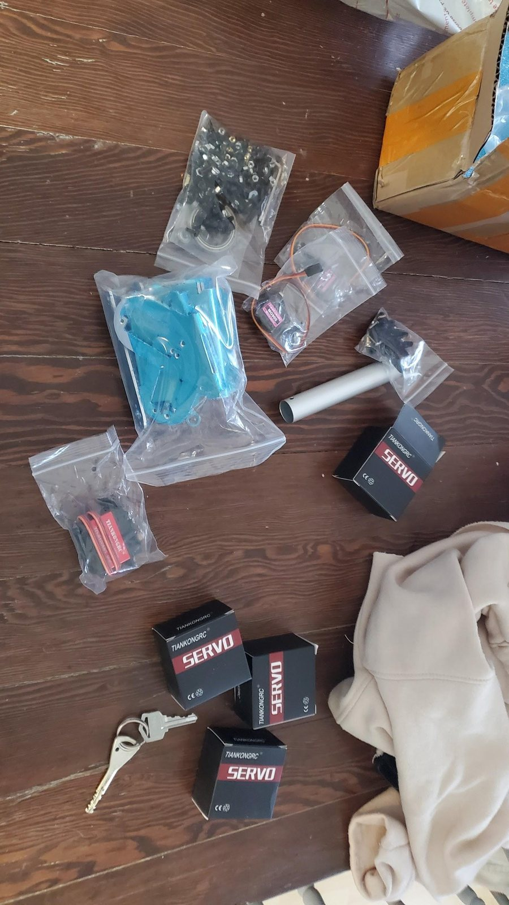

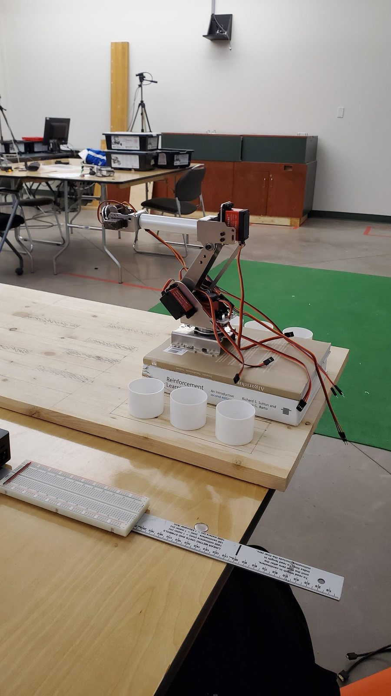
We drove it with a Raspberry Pi 4. We figured the Pi’s own software PWM would do, but in early tests its signals weren’t accurate enough, so we added Adafruit’s 16-channel PWM servo HAT.
| Arm | Thanksbuyer ARM-21N3, a 7bot clone with six servos |
|---|---|
| Servos | 4 × TD-8120MG (20 kg) and 2 × MG90S. Listed at 4.8 V, 210 mA no-load and 2100 mA ±10% stall |
| Controller | Raspberry Pi 4 Model B, 8 GB (BCM2711, four Cortex-A72 cores at 1.5 GHz) |
| Servo driver | Adafruit 16-channel 12-bit PWM servo HAT |
| Power | A 5 V 3 A supply for the servos. The Pi runs off a laptop over USB-C |
| Software | Python on the Pi, with adafruit_servokit for the servos |
The stand
We had to design the stand before the arm arrived, with only rough ideas of where it should sit relative to the canvas and paint cups, so we kept the design easy to adjust.

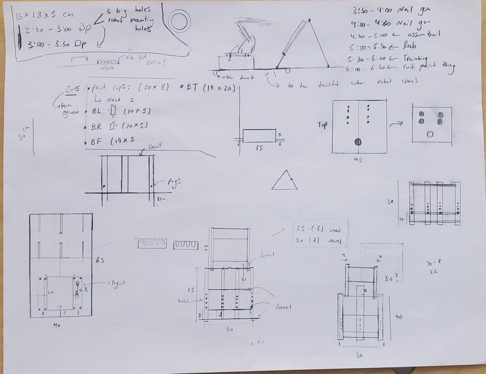
Then it was time to test my middle school woodshop skills. I cut the wood down on a table saw and a miter saw, did the finer work on a drill press and a bandsaw, and put it all together with a nail gun and wood glue.

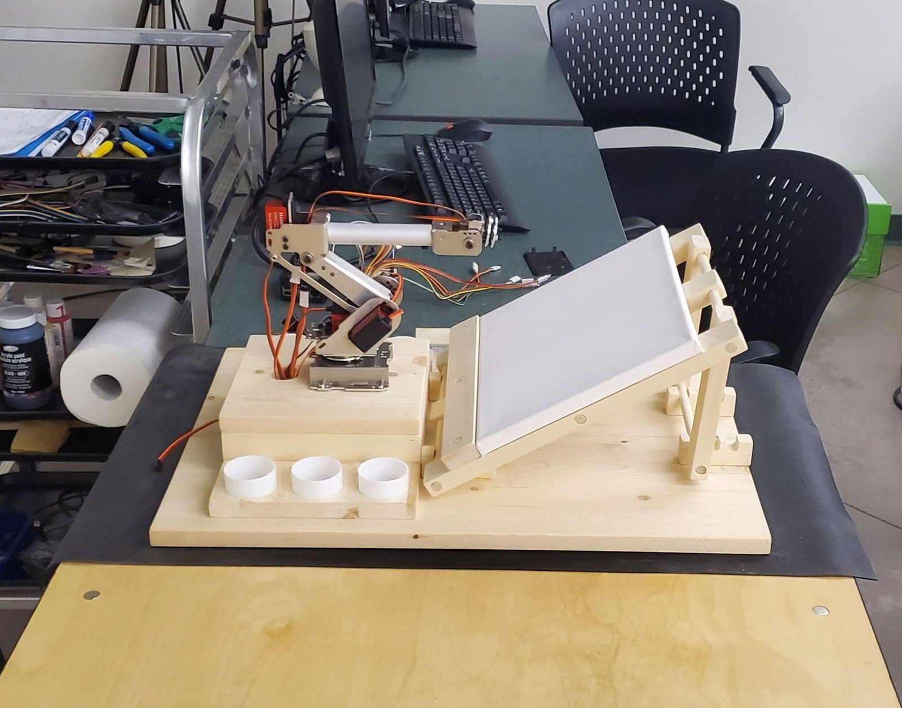
The arm bolts to a raised block with the Pi housed underneath, and six removable paint cups sit in front, three on each side. The canvas frame’s front and rear legs drop into notched blocks, and a row of holes and dowels sets the height of the mount.

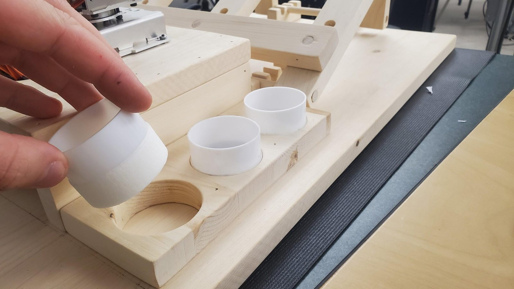

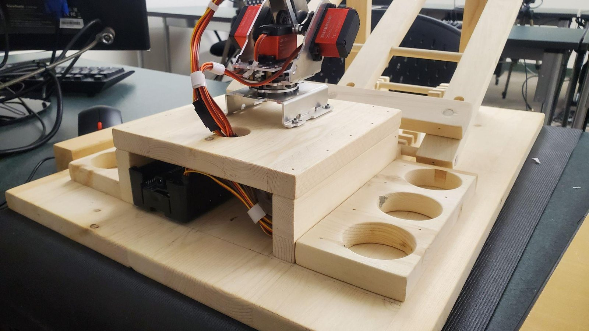

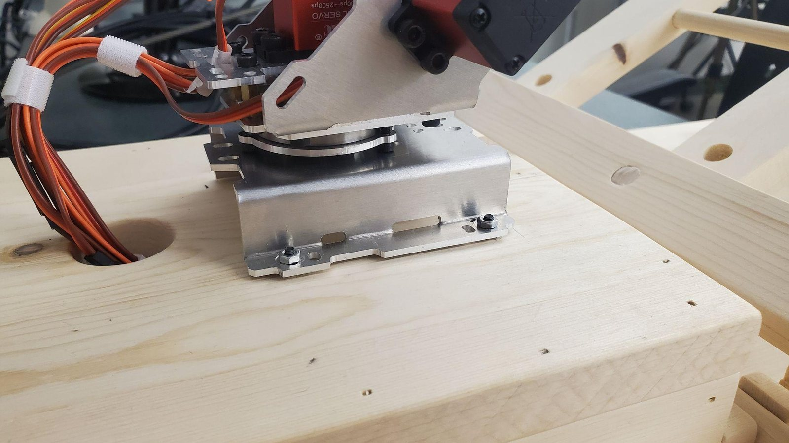

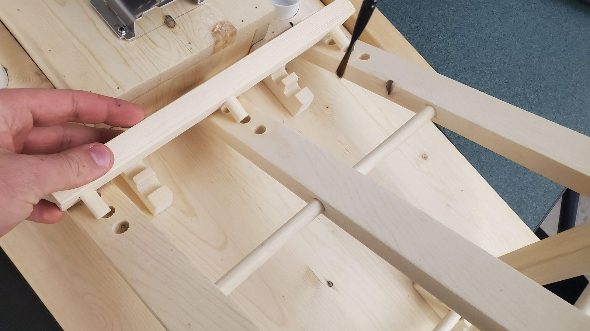
Measuring the arm
The forward kinematics needs accurate joint measurements, so we asked the seller for anything that might help. They sent back a product photo with three dimensions marked on it. It wasn’t much use, but we appreciated the effort.
Next we tried measuring from photos. I printed cards with a known scale and taped them to the arm, and we used Photoshop’s ruler tool to set the scale from the cards and measure the parts. It didn’t work well: the cards sat at a different distance from the camera than the parts, the camera wasn’t square to them, and a lot of the points we needed were hidden behind other parts. In the end we measured the joints with calipers, which was good enough.

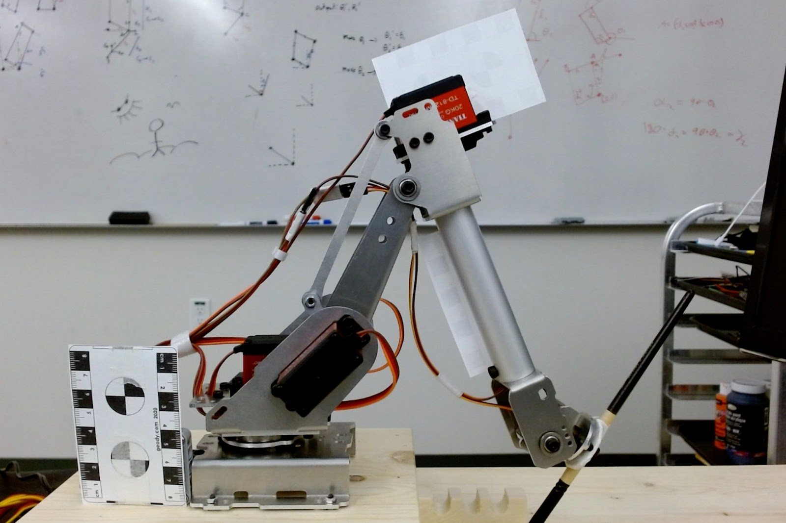

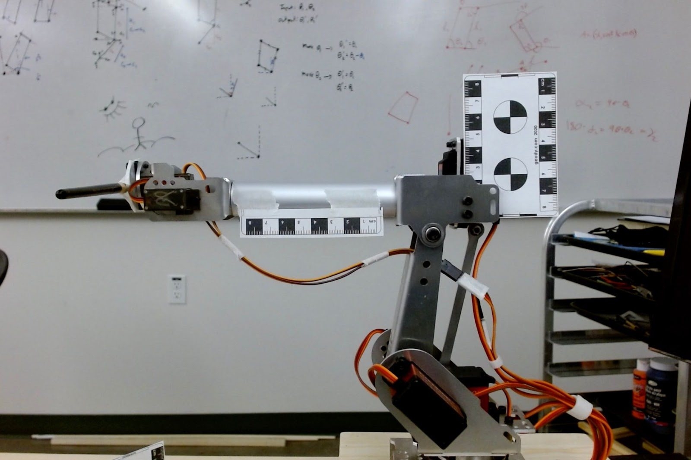
We also needed each servo’s zero relative to its joint’s axis in the model. Eyeballing worked for four of the six joints but not for the shoulder and elbow, so we measured those angles in Photoshop too.
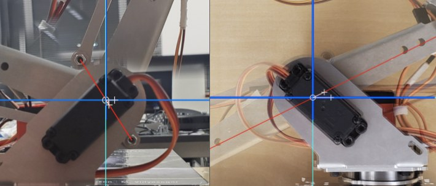
Forward kinematics
I wanted to model the arm as a serial chain so the forward kinematics could be a product of homogeneous transforms. That meant keeping two sets of angles: physical angles, which go to the servos, and logical angles, the joint angles in the serial model.
The brush tip is at
\[ \mathbf{p} = T_b\,R_z(\theta_0)\,T_0\,R_y(\theta_1)\,T_1\,R_y(\theta_2)\,T_2\,R_x(\theta_3)\,T_3\,R_y(\theta_4)\,T_4\,R_x(\theta_5)\,T_5 \begin{bmatrix}0\\0\\0\\1\end{bmatrix}, \]where each \(R\) rotates by a logical joint angle about the axis in its subscript, each \(T\) is a fixed translation from the caliper measurements, and \(T_b\) places the base in the world frame. The upper arm \(T_1\) is 9 cm, the forearm \(T_3\) is 15.8 cm, and \(T_5 = (0.8, 0, -7.5)\) cm runs from the last joint to the brush tip.

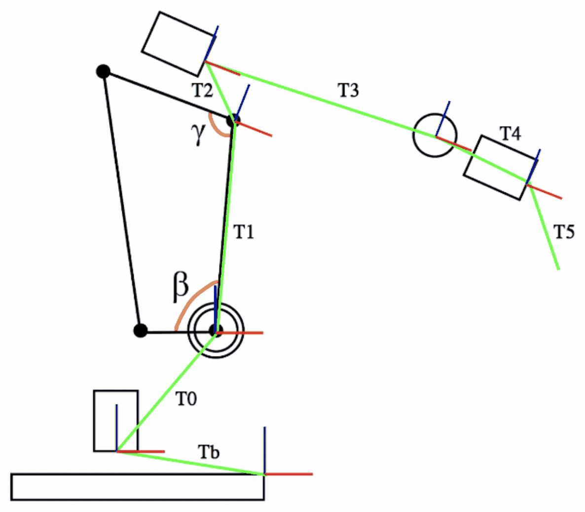
To get from physical to logical angles, each servo angle is lined up with its axis in the model by adding a constant and, for some joints, flipping the direction. In the code the base is offset by 90°, the shoulder by 26.4° and the elbow by 56.5°.

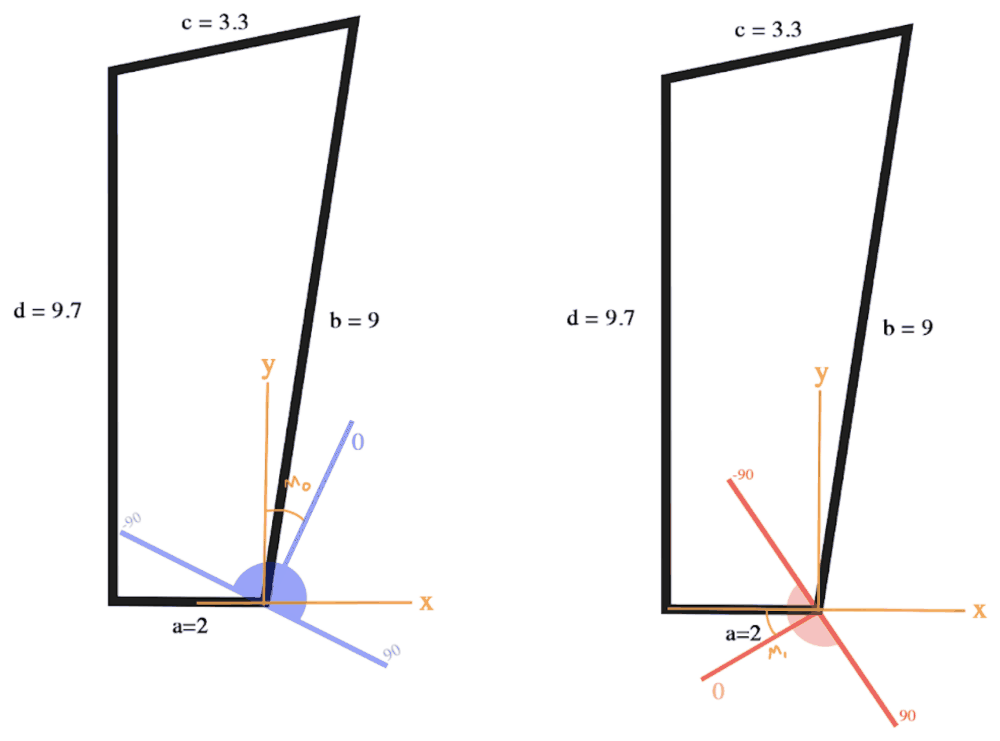
The elbow linkage
Most of the arm is already a serial chain. The shoulder and elbow aren’t: they form a four-bar linkage driven by two servos. Side \(b\) is the upper arm, the elbow servo turns the short crank \(a\), and the long link \(d\) connects the crank to \(c\), a short lever on the forearm.

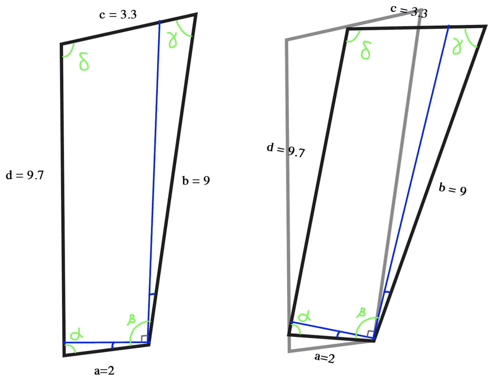
For the shoulder to behave as it does in the serial model, the angle \(\beta\) between the crank and the upper arm has to stay constant as the shoulder moves. So whenever the shoulder turns, I add its change in angle to the elbow servo too.
The serial model wants the elbow angle \(\gamma\), between the upper arm and the forearm lever, but the elbow servo can only set \(\beta\). The diagonal \(e\) from the end of the crank to the elbow splits the quadrilateral into two triangles. The law of cosines on the one with sides \(a\) and \(b\) gives
\[ e^2 = a^2 + b^2 - 2ab\cos\beta, \]and adding the angles that \(e\) makes with \(b\) and with \(c\) at the elbow gives
\[ \gamma = \cos^{-1}\!\left(\frac{b^2 + e^2 - a^2}{2be}\right) + \cos^{-1}\!\left(\frac{c^2 + e^2 - d^2}{2ce}\right). \]The figure labels the sides \(a = 2\), \(b = 9\), \(c = 3.3\) and \(d = 9.7\) cm. The code uses \(a = 2.5\), \(b = 9\), \(c = 3.275\) and \(d = 9.825\) cm, which gives \(\gamma \approx 104^\circ\) at \(\beta = 90^\circ\).
Going the other way, from a target \(\gamma\) to the \(\beta\) the servo needs, is a binary search. With the lengths in the code, \(\gamma\) falls steadily as \(\beta\) goes from about 10° to 180°, so bisecting on \(\beta\) gets as close as you like. The search runs between \(\pi/32\) and \(\pi\) and stops once \(\gamma\) is within 0.001 rad.
The last piece is joint limits. Every joint except the elbow has fixed limits; the elbow’s depend on where the shoulder is.

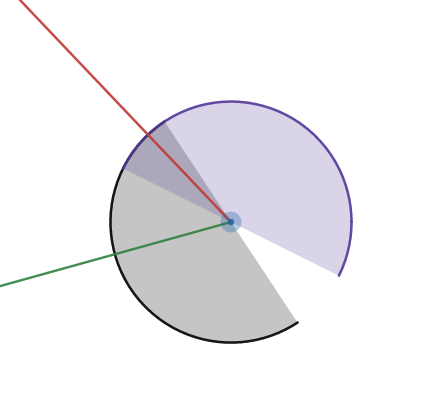

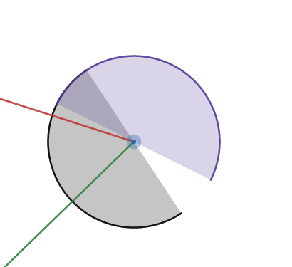
Inverse kinematics
The inverse kinematics is Yash’s. It runs Newton’s method on the forward model, directly in servo angles, with a finite-difference Jacobian: nudge each of the six servo angles by a small \(h\), rerun the forward kinematics, and see how far the brush tip moves.
\[ J_{:,j} \approx \frac{\mathbf{p}(\boldsymbol\theta + h\,\mathbf{e}_j) - \mathbf{p}(\boldsymbol\theta)}{h}, \qquad h = 10^{-4}\ \text{rad} \]The target is a point with no orientation, so \(J\) is 3 × 6. Each step uses its pseudo-inverse,
\[ \Delta\boldsymbol\theta = J^{+}\big(\mathbf{x}_{\text{goal}} - \mathbf{p}(\boldsymbol\theta)\big), \]scaled down if its norm is over 0.6 rad and kept inside the joint limits. The solver starts from the arm’s current pose and stops when the tip is within 0.1 cm of the goal. If it hasn’t converged after 100 steps, it restarts from a random pose. The arm doesn’t move until the model has an answer.
At first every joint was allowed the full 0 to 180°, which each one can do on its own. But the shoulder and elbow get in each other’s way, so many poses in that range are impossible. The fix was to let the shoulder move freely and bound the elbow by the shoulder, using the limits above. As the search space tightened, automated tests checked that the solver still converged on twelve targets spread across the workspace, with each coordinate of the result within 0.1 cm. Whenever a point failed, the constraints got loosened.
From SVG to points on the canvas
The SVG side is Yash’s too. SVG is based on XML, so Python’s built-in XML parser turns the file into a tree, and his code walks it and reads each shape. Regular expressions handle the space-saving shortcuts SVG files take, like dropping delimiters and leading digits.
Each shape then becomes a list of points along its outline, in image pixels. The renderer handles lines, circles, ellipses and paths made of cubic Bézier curves. It generates plenty of points, then prunes any too close to the last one kept, leaving them roughly evenly spaced. More points means a smoother line and a slower painting. A circle starts with 50 points and each Bézier segment with 80, and the pruning distance is 20 SVG units.
To map the image onto the canvas, the points are divided by the image width and height to put them in \([0, 1]\). Image x maps to the robot’s y axis, across the canvas, and image y to the robot’s x and z together, up the slope. Then the points are scaled to the size of the canvas and shifted by the offset from the robot’s origin to the canvas’s bottom-left corner. config.py sets a 15 × 15 cm area tilted at 0.565 rad, about 32°.

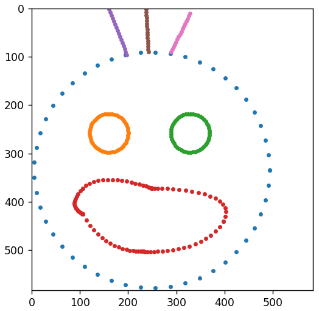

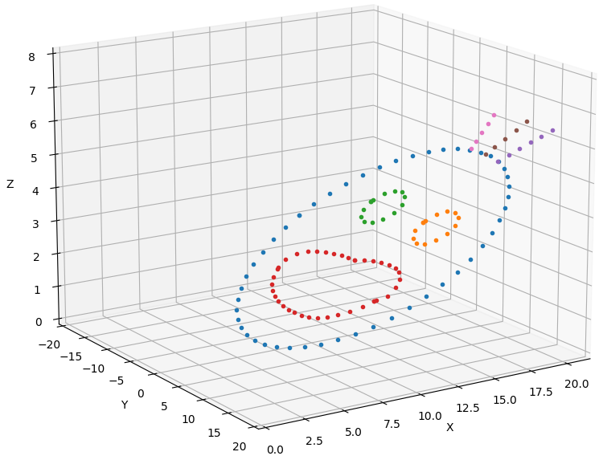
Painting
The painting loop is short: parse the SVG, then for each shape, turn it into 2D points, map them onto the canvas, dip the brush and visit every point in order. The dip is three fixed servo poses played forward and then back, and after every move the code waits 0.4 s before sending the next. The stand has six cup holders, but both paintings here use just one cup of black paint.
Both drawings are simple SVGs made of circles, ellipses, lines and one Bézier path for the face’s mouth.

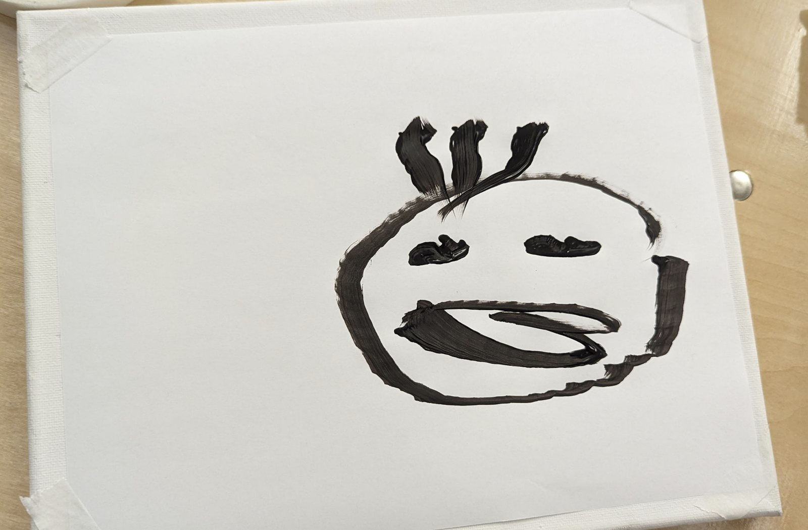

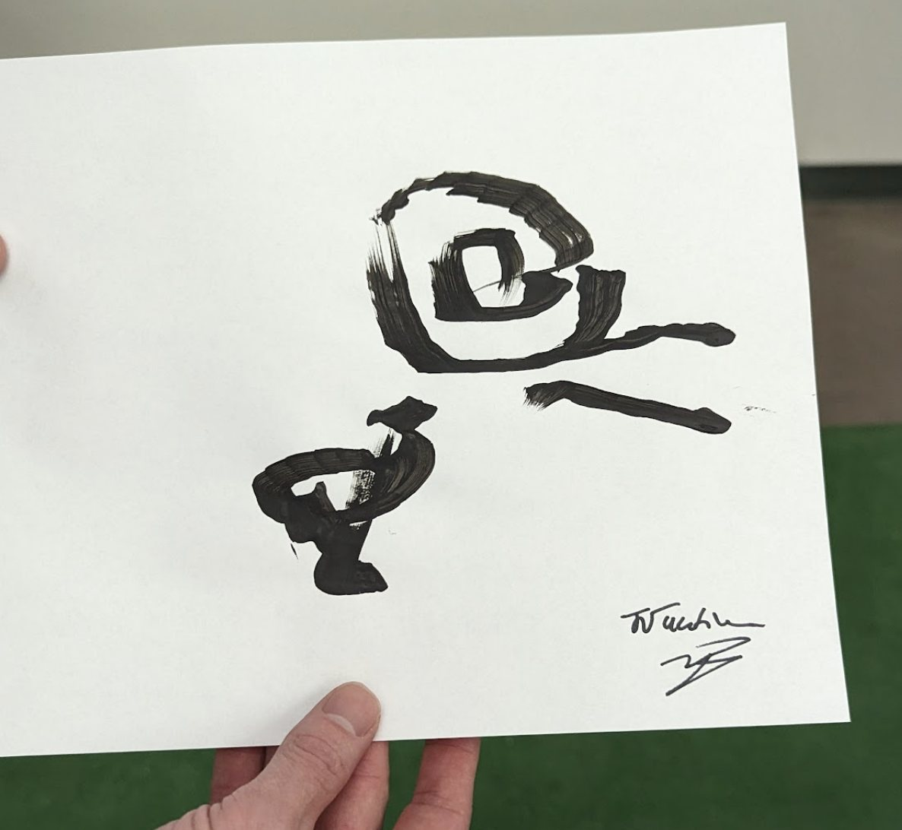
Update, April 2023
I copied the code off the Pi into my own repo, JustinValentine/painting-robot, with the SVG files.
Update, October 2024
I added the report to the repo.
Questions or comments? Email me at justin@justinvalentine.ca.
Comments